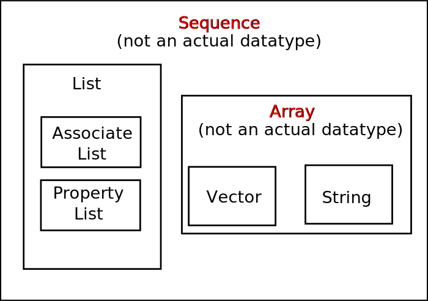

Elisp
Table of Contents
An excerpt from XahLee's Practical Emacs Lisp .
Intro
Here just some fragment that help me to remind relative aspects. And you want know more, please learn from XahLee's Practical Emacs Lisp .
Emacs Lisp Basics
Evaluate and Help
How to evaluate elisp code?
| Command | Key |
|---|---|
| eval-last-sexp | C-x C-e |
| eval-region | |
| eval-buffer |
To find the doc string of a function, run describe-function <C-h f>.
Printing
1: ; printing 2: (message "Hello world!") ; "Hello world!"
You can see the output in the buffer named *Messages*. You can switch to it by view-echo-area-messages <C-h e> .
[see Elisp: Print, Output]
[see Elisp: Format String]
Arithmetic
1: ;; 3. is a integer, 3.0 is a float 2: (integerp 3.) ; t 3: (floatp 3.) ; nil 4: (floatp 3.0) ; t
Function names that end with a "p" often means it return either true of false. (The "p" stands for "predicate") t means true, nil means false.
Convert String and Number
1: (string-to-number "3") 2: (number-to-string 3)
True, Flase
There is no "boolean datatype" in elisp. Just remember that nil and empty list () are false, anything else is true.
Boolean Functions
1: ;; Comparing numbers 2: ;; < > <= >= = /= 3: (= 3 3) ; t 4: (= 3 3.00000000000000001) ; t 5: 6: (/= 3 4) ; not equal. ⇒ t
*Tips: = is used to compare numbers but not assign.
For generic equality test, use equal. It test if two values have the same datatype and value.
There's alse the function eq, it returns t if the two args are the same Lisp object. This is usually not what you want. e.g. (eq "e" "e") returns nil.
To test for inequality, the /= is for numbers only, and doesn't work for strings and other lisp data. Use not to negate your equality test.
Variables
Global Variables
setq is used to set variables. Variables need not be declared, and is global.
1: (setq x 1) ; assign 1 to x 2: (setq a 3 b 2 c 7) ; multiple assignment
Local Variables
To define local variables, use let. The form is:
1: ;; (let (var1 var2 ...) body) 2: (let (a b) 3: (setq a 3) 4: (setq b 4) 5: (+ a b) 6: ) ; 7 7: 8: ;; (let ((var1 val1) (var2 val2) …) body) 9: ;; This form is convenient if you just have a few simle local vars with known values. 10: (let ((a 3) (b 4)) 11: (+ a b) 12: ) ; 7
Where body is (onre or more) lisp expressions. The body's last expression's value is returned.
If Then Else
The form for "if" expression is:
1: ;; (if test body) 2: ;; or 3: ;; (if test true_body false_body) 4: ;; and if no flase expression, return nil. e.g. 5: (if (< 3 2) (message "yes")) ; nil
[REF (info "(elisp) Control Structures")]
If you do not need a "else" part, you should use the function when instead, because it is more clear. The form is:
1: ;; (when test expr1 expr2 ...) 2: ;; Its meaning is the same as 3: ;; (if test (progn expr1 expr2 ...))
Block of Expressions
Sometimes you need to group several expressions together as one single expression. This can be done with progn.
The purpose of (progn ...) is similar to a block of code {...} in C-like languages. progn returns the last expression in its body.
Loop
Most basic loop in elisp is with (while test body), where body is one or more lisp expressions.
1: (setq x 0) 2: 3: (while (< x 4) 4: (print (format "number is %d" x)) 5: (setq x (1+ x)))
Usually it's better to use dolist or dotimes .
[see Elisp: Map List/Vector]
[REF (info "(elisp) Iteration")]
[see Elisp: throw, catch]
Sequence, List, Vector
Here's a chart of elisp's most important list-like datatypes.
*Tips: "Sequence" and "Array" are note actual datatypes in elisp. They are grouping names for other actual datatypes.
When a function's doc says that an argument is a sequence type, it means that it can be list, vector, or string. (e.g. mapcar).
When a function's doc says an argument is a array type, it means that it can be vectory or string. (e.g. aref)
List and Vector both hold a ordered sequence of values, each value can be any type.
Differences Between List and Vector
Here's the primary differences between list and vector:
- Vector, access time to any element is constant.
- Vector's length cannot change. If you create a new copy of a vector, the time required is proportional to the vector's length.
- List, access time to a element is proportional to the distance of the element's position in the list.
- List's length can grow by prepending element, and can shorten by rempoving first element. These operations have constant time.
We will learn more at Lisp Data Structure.
Define a Function or Command
Basic function definition is of the form:
1: ;; (defun function_name (param1 param2 ...) "doc_string" body) 2: (defun myFunction () 3: "testing" 4: ;; (interactive) 5: (message "Yay!"))
When a function is called, the last expression in the function's definition body is returned. (there's no "return statement".)
[REF (info "(elisp) Defining Functions")]
When a function is also a command, we say that the function is avilable for interactive use.
To make a function availiable for interactive use, add (interactive) right after the "doc string". Evaluate the following code. Then, you can call it by execute-extended-command.
[REF (info "(elisp) Defining Commands")]
Here is a function definition template that majority of elisp commands follow:
1: (defun myCommand () 2: "One sentence summary of what this command do. 3: 4: More detailed documentation here." 5: (interactive) 6: (let (localVar1 localVar2 ...) 7: ; do somethins here... 8: ; ... 9: ; last expression is returned 10: ))
[see Elisp: Function Optional Parameters]
[see Elisp: Doc String Markup]
Lisp Data Structure
List
Emacs Lisp's list datatype is known as linked list in computer science.